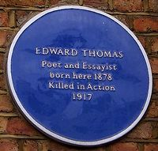
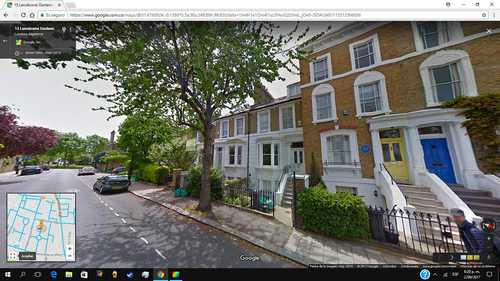
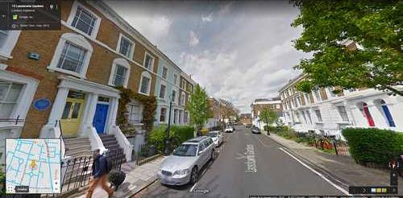

Sommaire du site > > > Prochainement
En guise de présentation
En 1913 l'écrivain, poète, critique littéraire Edward Thomas (1878-1917) effectua un voyage à bicyclette, de Londres jusqu'aux collines de Quantock, dans le Sommerset, site considéré comme parmi les plus beaux d'Angleterre et où vécut le poète romantique anglais Samuel Taylor Coleridge de 1797 à 1798.
Il fit le récit de ce voyage dans un livre intitulé : In Pursuit of Spring, publié en 1914.
Il a pris le départ de ce voyage le vendredi 21 mars 1913, depuis sa maison natale à Londres ( Voir photos ci-dessous ). A cette époque, et depuis l'année 1906, il vivait dans le village de Steep dans le comté de Hampshire ( ref : telegraph.co.uk. Voir la maison de Edward Thomas à Steep sur le site Dr Tony Shaw )
Son départ depuis sa maison natale est confirmé par la relation par Edward Thomas des routes qu'il emprunte.
De plus, en 1993, Mary Wynn-Jones, membre de la Edward Thomas Fellowship (Association Edward Thomas), pour célébrer le quatre-vingtième anniversaire du voyage de Edward Thomas, refit le voyage de celui-ci en empruntant le même parcours, aux mêmes dates et signale avoir pris la route depuis sa maison natale, où de plus les propriétaires des lieux l'ont invitée à passer la nuit précédant le voyage. Mary Wynn-Jones a fait le récit - très plaisant à lire ; en anglais - de son voyage dans la newsletter d'août 1993 de la Edward Thomas Fellowship : newsletter august 1993, fichier pdf
Nous vous propons la traduction française de In Pursuit of Spring, effectuée par nos soins, et publiée sur ce site au fur et à mesure de la traduction des chapitres.
Je ne suis pas traducteur professionnel, mais enthousiasmé par ce livre et son auteur.
Pourquoi The Other Man en titre de ce site ? Vous comprendrez en lisant le livre !

Londres, maison natale de Edward Thomas (1878), avec la plaque bleue à côté de la porte.
C'est depuis cette maison qu'il a pris le départ du voyage relaté dans In Pursuit of Spring.

Londres, maison natale de Edward Thomas (1878), avec la plaque bleue à côté de la porte

Londres, maison où vécut Edward Thomas dans les années 1890, avec la plaque bleue à côté de la fenêtre
ce film de Londres en 1917, soit quatre années après le voyage.
Source
Sommaire du site > > > Prochainement